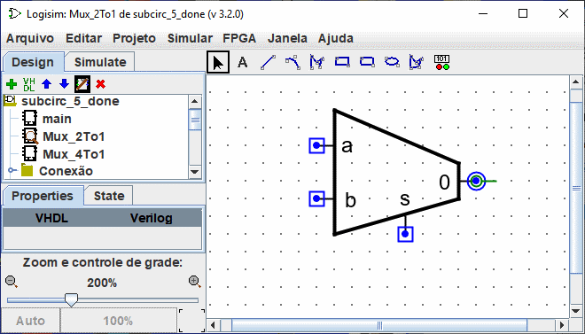
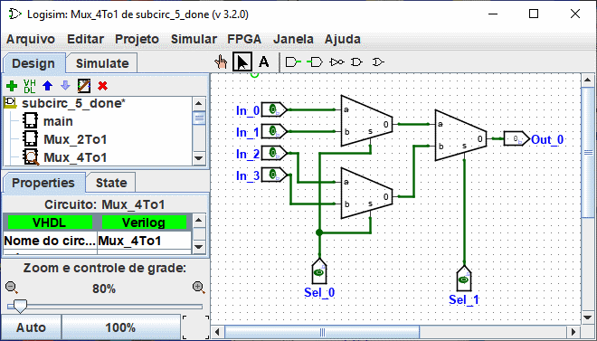
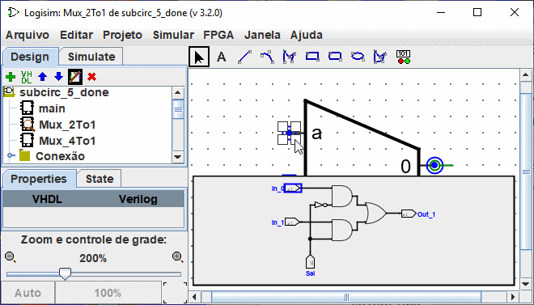

Personalizar a aparência
A forma padrão é muito útil, e de fato Logisim existiu por muitos anos, sem outra opção. Se, no entanto, preferir que o subcircuito seja desenhado de forma diferente, você poderá selecionar | projeto |→| Editar Forma do Circuito |, e Logisim mudará da interface de "edição de desenho" para a interface de "edição de aparência" do circuito. Você também pode clicar no ícone na extrema direita ( ) de la da barra de ferramentas do Explorer.
) de la da barra de ferramentas do Explorer.
Abaixo, editaremos a aparência do multiplexador 2:1, para que seja desenhada como de costume por um trapézio, em vez de um retângulo.

Ao alterar a aparência do multiplexador 2:1 desenhado acima, você provavelmente terá que reajustar a fiação dos circuitos que utilizam o multiplexador. Depois disso, o layout do multiplexador 4:1 se parece naturalmente com este.

O editor de forma (aparência) é como um programa para desenho tradicional, mas há alguns símbolos especiais para indicar como o desenho funcionará quando colocado em um layout de circuito. Esses símbolos especiais não poderão ser removidos.
-
O círculo verde com uma linha que vem de fora, chamaremos de
âncora.
Há exatamente uma âncora em cada subcircuito. Cada componente em um circuito tem um único ponto para identificar a sua localização; um usuário verá isso ao criar um novo componente. O clique do mouse identificará apenas um local e, o componente será colocado em relação a ele (geralmente com a saída principal na posição do mouse). A âncora identificará a localização relativa ao desenho global do mouse quando o subcircuito for criado.A âncora também identificará a direção em sua aparência, conforme indicado pela direção da linha de pontos da âncora de seu círculo. Ao colocar um subcircuito em um layout, o usuário poderá mudar a face do subcircuito, a âncora indicará a direção em que a aparência será orientada. No nosso exemplo, a âncora será voltada para o leste, e cada instância do subcircuito no multiplexador 4:1 também estará voltada para o leste, então eles serão todos desenhados com a mesma orientação que a aparência do multiplexador 2:1.
-
Os círculos azuis e quadrados com pontos são as
portas
dos subcircuitos Haverá exatamente tantas portas quantos os pinos de entrada e saída no circuito. Portas correspondentes às entradas serão desenhadas como quadrados, enquanto as portas correspondentes às saídas serão desenhados como círculos. Cada porta indicará como uma conexão para o circuito corresponderá a um pino de entrada ou saída dentro do layout.Quando você selecionar uma porta, o Logisim indicará o pino correspondente fazendo sobressair um diagrama em miniatura do layout no canto inferior direito da janela, com o(s) pino(s) correspondente(s) desenhado(s) em azul. Isso não acontecerá quando todas as portas estiverem selecionados.

Podemos mudar o zoom da imagem com uma Ctrl+Roda de rato ou usando os botões da lupa ou o botão deslizante na parte inferior esquerda do espaço de trabalho. A taxa é exibida.
A barra de ferramentas contém aquelas para adicionar formas adicionais, conforme listado abaixo com descrições de como as teclas (Ctrl,Alt,shift) modificam o comportamento da ferramenta. Estas chaves podem ser combinadas umas com as outras.
Ctrl: alinha os pontos finais na grelha.
Shift: orientar as linhas num ângulo múltiplo de 45° ou tornar as figuras simétricas (quadrado, quadrado arredondado, círculo).
Alt: Tira os números do centro.
Abaixo está uma pequena apresentação de cada ferramenta.

|
Ferramenta de Seleção : Selecionar, mover, copiar, colar e formas. |

|
Ferramenta de Texto : Adicionar ou editar texto. |

|
Ferramenta da linha : Criar um segmento de linha. |

|
Ferramenta Curva : CCriar uma curva Bézier quadrática. Para o primeira arraste, onde você especificará os parâmetros da curva. Depois clique para indicar a localização de três pontos de controlo. shift et click no ponto de controle central impõem uma curva simétrica. Alt et click no ponto central desenha a curva através do ponto de controle (sob o mouse). |

|
ferramenta Polyline: Criar uma seqüência de linhas conectadas, cada cliqk inicia um novo segmento. Um duplo-click termina a sequência. |

|
Ferramenta retangular : Cria um rectângulo ou quadrado (Schift) arrastando de um canto para o canto oposto. |

|
Ferramenta retangular : Cria um rectângulo ou quadrado (Schift) com uma aresta arredondada arrastando de um canto para o canto oposto. |

|
Ferramenta oval : Cria um círculo ou oval (Schift) deslizando de um canto do seu contorno para o canto oposto. |

|
Ferramenta Polígono : Criar um polígono arbitrário. cada click inicia um novo lado. Um duplo-click termina a sequência. |

|
Ferramenta de componente dinâmico : |
Próximo: Depuração de subcircuitos. .